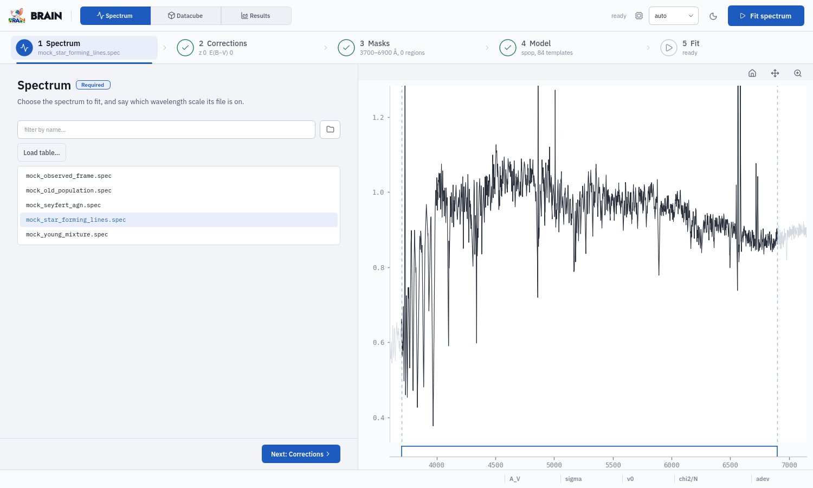
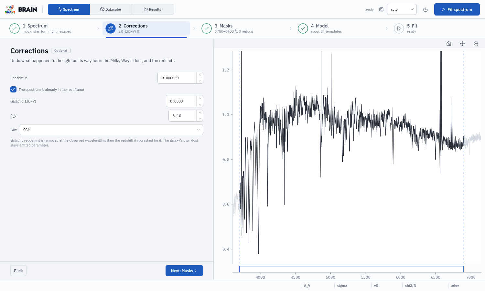
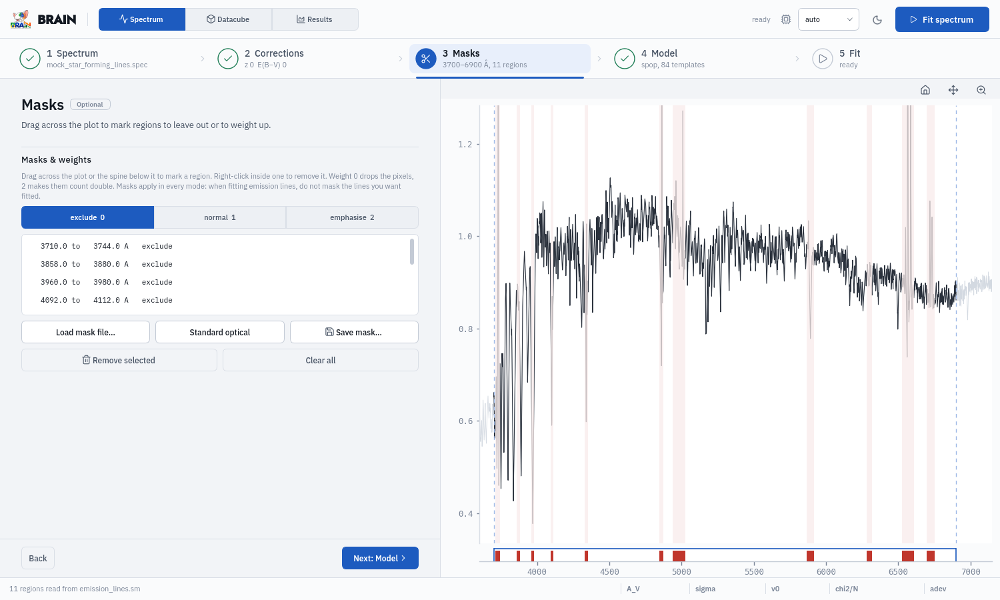
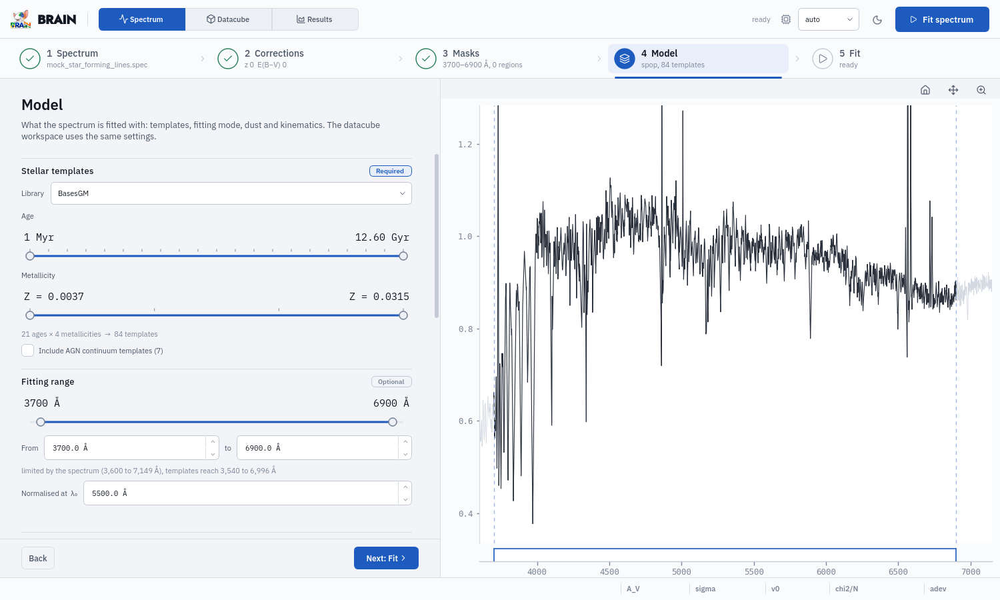
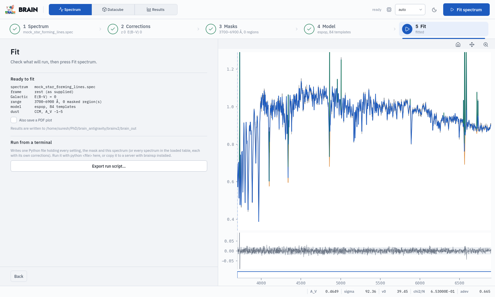

The Spectrum workspace#
Five steps: Spectrum, Corrections, Masks, Model, Fit.
1. Spectrum (required)#

Filter by name narrows the list; the folder button opens another folder of spectra. The interface starts on
~/.brainsp/examples/spectrawhenbrainsp exampleshas written the mock data there.Clicking a file draws it on the right. Files are plain text: wavelength (Å), flux, and optionally error and flag (Input data).
Load table… reads a CSV of spectra with their own corrections:
filename, redshift, ebv, rv, law, rest_frame. Choosing a spectrum from the table sets the Corrections step from its row, and Fit every spectrum in the table appears on the Fit step.Wavelength scale (air or vacuum) appears here when the nebular mode places emission lines (
espop,nepop,photopop). It is a fact about the data: SDSS and MaNGA are vacuum; MUSE, CALIFA and most ground-based optical spectrographs are air. A wrong answer shifts every gas velocity by about 83 km/s and nothing else reveals it, so it is required.
2. Corrections (optional)#

What happened to the light on its way here, undone before the fit:
Redshift z and The spectrum is already in the rest frame. Ticked, the spectrum is at rest and z records what was removed (it matters for the instrumental resolution and the Galactic dust, which act at observed wavelengths). Unticked, BRAIN divides the wavelengths by 1 + z itself.
Galactic E(B−V), R_V and Law: the Milky Way’s reddening, removed at the observed wavelengths. Look it up for the galaxy’s position (for example in the Schlafly & Finkbeiner 2011 maps at IRSA). 0 leaves it.
The galaxy’s own dust is not a correction: it is fitted (Model step).
3. Masks (optional)#

Drag across the spectrum, or across the thin strip under it, to mark a region; right-click inside one to remove it.
The weight of new regions: exclude 0 (left out), normal 1, emphasise 2 (counted double).
Load mask file… reads a mask file (
.sm,.gm: the count, thenstart end weight [label]) or a plain list; Standard optical adds the SDSS emission-line windows; Save mask… writes the same format.Remove selected and Clear all edit the list.
The fitting range itself (3700–6900 Å by default) is set in the Model step.
4. Model (required)#

The physics of the fit. The datacube workspace uses this same panel, so a spectrum and a cube are fitted the same way unless you change it.
- Stellar templates (required)
Library (BasesGM, and any you add, Template libraries); the Age and Metallicity ranges, which choose the templates; Include AGN continuum templates (7) (AGN continuum). The count of templates is shown underneath.
- Fitting range (optional)
the wavelengths fitted, dragged on the slider or typed in From / to. The range can only cover wavelengths that both the data and the templates have: whatever a library spans, the fit runs over the spectrum (or, on the Datacube page, the selected cube). The caption says which of the two limits it. A new spectrum keeps the range if it still fits, and otherwise takes all of its own.
Normalised at λ₀: where the templates and the data are normalised, and so the wavelength the light fractions refer to (setting
normalisation_wavelength). It follows the range, 5500 Å when the range holds it and otherwise the middle of the range, until you type a value; a value outside the range is flagged. For a near-infrared cube, choose a stretch of continuum, e.g. the S/N window.- Nebular treatment (required)
spop(stars only),espop(and emission lines),nepop(and nebular continuum),photopop(and the gas tied to the ionising photons). Modes the library cannot support are struck through, with the reason (Nebular modes).- Dust (optional)
the extinction law (CCM by default; every law with its reference) and the allowed A_V range.
- Kinematics (optional)
the allowed stellar velocity and velocity dispersion ranges.
- Fit quality (optional)
Smoothness (regularisation of the star-formation history; 0 is none), Error samples (Monte Carlo resamplings for error bars; 0 skips them) and Reject outlier pixels (one clip-and-refit pass at 3 sigma).
5. Fit#

Ready to fit summarises what will run; it reads Not ready and the step shows ! when something above is missing.
Also save a PDF plot writes
<name>_fit.pdf.Results are written to
./brain_out, where the interface was started.Fit spectrum (top right) runs it. The fit appears over the data: the model in blue, the stellar part in orange, emission lines in green, the residuals underneath, the numbers in the bottom bar.
Fit every spectrum in the table, with a table loaded, fits them all in one go, each with its own corrections. On a GPU one process fits them in turn and keeps the fit compiled (about 0.5 s per spectrum after the first); on a CPU with a long table, worker processes fit them in parallel. Each result is drawn as it arrives; the status line reports the speed.
Export run script… writes the run (every setting, the mask, the spectrum or the whole table with its corrections) as one Python file:
python run.pyruns it anywhere brainsp is installed. Save it in the folder that holds your data (the dialog opens in the folder you started BRAIN from): paths inside that folder are written relative to it, so the whole folder can be copied to a server and run there. Files outside it are named under the button, because they will not travel with the folder (One file per run).